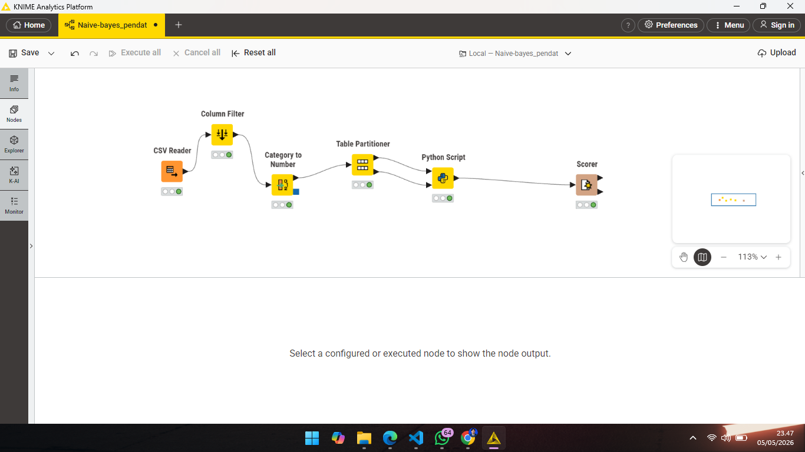

Perhitungan Naive-bayes#
Dokumentasi ini merangkum proses pengembangan model Machine Learning untuk mengklasifikasikan status stunting menggunakan platform KNIME Analytics Platform dan integrasi Python.
1. Pendahuluan#
Proyek ini bertujuan untuk memprediksi status stunting dan wasting pada anak berdasarkan data antropometri. Algoritma yang digunakan adalah Naive Bayes (Gaussian) yang diimplementasikan melalui script Python di dalam ekosistem KNIME.
2. Arsitektur Workflow#
Workflow dirancang untuk mengolah data mentah dari CSV hingga menghasilkan statistik akurasi akhir.
Gambaran Besar Workflow#

Keterangan: Hubungkan node dari CSV Reader -> Category to Number -> Partitioning -> Python Script -> Scorer.3. Tahapan Pre-processing Data#
Sebelum masuk ke model, data melalui tahap pembersihan untuk memastikan tidak ada error saat perhitungan matematika.
Langkah-langkah:#
CSV Reader: Membaca dataset
prhtngn_stunting_mtd_NBY.csvdengan semicolon;sebagai pemisah.Category to Number: Mengubah data kategorikal seperti ‘Jenis Kelamin’ dan ‘Stunting’ menjadi representasi angka (Label Encoding).
Partitioning: Membagi data menjadi 80% Training Data dan 20% Testing Data.
Tips: Pastikan kolom target sudah diubah menjadi angka agar tidak menyebabkan error
ValueErrorpada script Python.
4. Implementasi Model (Python Script)#
Kami menggunakan library scikit-learn untuk menjalankan algoritma Naive Bayes. Berikut adalah kode final yang digunakan:
import pandas as pd
import numpy as np
from sklearn.naive_bayes import GaussianNB
import knime.scripting.io as knio
# Mengambil data dari KNIME
train_df = knio.input_tables[0].to_pandas()
test_df = knio.input_tables[1].to_pandas()
# Fungsi pembersihan otomatis (Auto-clean)
def clean_data(df):
df = df.drop(columns=['No.'], errors='ignore')
for col in df.columns:
# Konversi paksa ke numerik, string akan menjadi NaN lalu diubah ke 0
df[col] = pd.to_numeric(df[col], errors='coerce')
return df.fillna(0)
# Proses Data
X_train_final = clean_data(train_df)
X_test_final = clean_data(test_df)
# Pemisahan Fitur dan Target (Kolom Terakhir)
target_name = X_train_final.columns[-1]
y_train = X_train_final[target_name].astype(int)
X_train = X_train_final.drop(columns=[target_name])
# Training Model
model = GaussianNB()
model.fit(X_train, y_train)
# Prediksi
predictions = model.predict(X_test_final.drop(columns=[target_name]))
# Output kembali ke KNIME
result_df = test_df.copy()
result_df['Prediksi_Hasil'] = predictions
knio.output_tables[0] = knio.Table.from_pandas(result_df)
## Tentu, ini adalah draf lengkap dalam format Markdown (.md) yang sudah saya susun secara sistematis. Kamu bisa langsung menyalin kode di bawah ini ke editor teks (seperti Notepad, VS Code, atau Obsidian) dan menyimpannya dengan ekstensi .md (misalnya: Laporan_Stunting.md).
Pastikan kamu sudah menyiapkan file gambar dengan nama yang sesuai agar muncul di dokumen.
Markdown
# Dokumentasi Proyek: Klasifikasi Stunting Menggunakan Algoritma Naive Bayes di KNIME
Dokumentasi ini merangkum proses pengembangan model *Machine Learning* untuk mengklasifikasikan status stunting menggunakan platform KNIME Analytics Platform dan integrasi Python.
---
## 1. Pendahuluan
Proyek ini bertujuan untuk memprediksi status stunting dan wasting pada anak berdasarkan data antropometri. Algoritma yang digunakan adalah **Naive Bayes** (Gaussian) yang diimplementasikan melalui script Python di dalam ekosistem KNIME.
---
## 2. Arsitektur Workflow
Workflow dirancang untuk mengolah data mentah dari CSV hingga menghasilkan statistik akurasi akhir.
### Gambaran Besar Workflow

*Keterangan: Hubungkan node dari CSV Reader -> Category to Number -> Partitioning -> Python Script -> Scorer.*
---
## 3. Tahapan Pre-processing Data
Sebelum masuk ke model, data melalui tahap pembersihan untuk memastikan tidak ada error saat perhitungan matematika.
### Langkah-langkah:
1. **CSV Reader**: Membaca dataset `prhtngn_stunting_mtd_NBY.csv` dengan semicolon `;` sebagai pemisah.
2. **Category to Number**: Mengubah data kategorikal seperti 'Jenis Kelamin' dan 'Stunting' menjadi representasi angka (Label Encoding).
3. **Partitioning**: Membagi data menjadi **80% Training Data** dan **20% Testing Data**.
> **Tips:** Pastikan kolom target sudah diubah menjadi angka agar tidak menyebabkan error `ValueError` pada script Python.
---
## 4. Implementasi Model (Python Script)
Kami menggunakan library `scikit-learn` untuk menjalankan algoritma Naive Bayes. Berikut adalah kode final yang digunakan:
```python
import pandas as pd
import numpy as np
from sklearn.naive_bayes import GaussianNB
import knime.scripting.io as knio
# Mengambil data dari KNIME
train_df = knio.input_tables[0].to_pandas()
test_df = knio.input_tables[1].to_pandas()
# Fungsi pembersihan otomatis (Auto-clean)
def clean_data(df):
df = df.drop(columns=['No.'], errors='ignore')
for col in df.columns:
# Konversi paksa ke numerik, string akan menjadi NaN lalu diubah ke 0
df[col] = pd.to_numeric(df[col], errors='coerce')
return df.fillna(0)
# Proses Data
X_train_final = clean_data(train_df)
X_test_final = clean_data(test_df)
# Pemisahan Fitur dan Target (Kolom Terakhir)
target_name = X_train_final.columns[-1]
y_train = X_train_final[target_name].astype(int)
X_train = X_train_final.drop(columns=[target_name])
# Training Model
model = GaussianNB()
model.fit(X_train, y_train)
# Prediksi
predictions = model.predict(X_test_final.drop(columns=[target_name]))
# Output kembali ke KNIME
result_df = test_df.copy()
result_df['Prediksi_Hasil'] = predictions
knio.output_tables[0] = knio.Table.from_pandas(result_df)
## 5. Hasil dan Evaluasi
Evaluasi dilakukan menggunakan node Scorer (JavaScript) untuk membandingkan label asli dengan hasil prediksi model.
Confusion Matrix
Keterangan: Tabel ini menunjukkan distribusi prediksi benar dan salah untuk setiap kategori.
Statistik Akurasi
Keterangan: Di sini kita dapat melihat nilai Overall Accuracy, Precision, dan Recall dari model.
## 6. Kesimpulan
Model Naive Bayes berhasil diimplementasikan dengan integrasi Python di KNIME. Penggunaan teknik force-to-numeric pada pre-processing sangat krusial untuk menangani data campuran (string dan numerik) yang sering ditemukan pada dataset kesehatan.